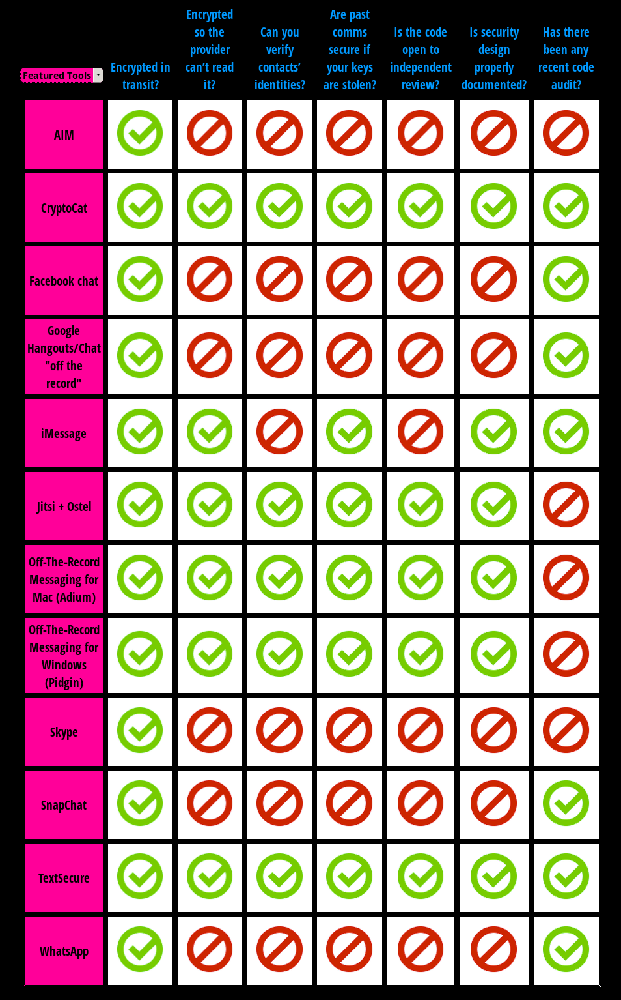

Cryptography
1 Why is Cryptography important?
Learn It

- Cryptography is not just for spies and secret agents. We all use cryptography, every day.
- There are lots of apps and websites that use cryptography to communicate between clients and servers.
- Public Key Cryptography is very complicated, but here is a quick outline of how it works.
- If you are on an https:// website or you see the little green padlock in your URL bar, you are communicating with a website using a type of public key cryptography called SSL/TLS
- When you connect to the website server, the server sends you it's public key.
- Your client machine then generates a random number to use as a session key. This will be used by both server and client to communicate.
- The server doesn't know the session key yet, so it is encrypted with the public key and sent to the server.
- The server decrypts the session key with it's private key.As only the server has the private key, only it can decrypt the session key.
- Now only the client and server have the unique session key. They can use this to encrypt data and send it between them, knowing only the client and server can decrypt the messages
- SSL/TLS is incredibly important. It's used on all the major social networks, lots of email services and also when we conduct financial transactions online.
Badge It - Silver
- Draw a diagram to show how SSL/TLS encryption works, using the characters Alice, Bob and Eve.
- Here's an example of the type of diagram, although this is just for basic encryption.

2 The encryption debate
Learn It
- The very latest encryption algorithms are very hard to break.
- For instance, there is a type of cryptographic algorithm called AES. Let's have a look at how hard AES would be to crack.
- If you assume:
- Every person on the planet owns 10 computers.
- There are 7 billion people on the planet.
- Each of these computers can test 1 billion key combinations per second.
- On average, you can crack the key after testing 50% of the possibilities.
- Then the earth's population can crack one encryption key in 77,000,000,000,000,000,000,000,000 years!
Learn It
- What this means, is that it is very easy for people to communicate with each other, using encrypted messages that are basically impossible for anyone else to read (so long as you use strong passwords).
- Who might want to communicate using such strong encryption?
- Members of the armed forces wishing to make sure the enemy can't read their messages.
- Journalists wishing to communicate with their sources in secret.
- Whistle blowers wishing to leak sensitive information about illegal activities or corruption.
- People living in countries with oppressive governments or rulers, known for abusing civil and human rights.
- Criminals wishing to hide their activities from law enforcement agencies.
- Terrorists wishing to hide their activities from security agencies.
- People who are worried they might become a victim of cyber crime, if certain communications are read.
- There are many applications, that are freely available,that allow for ordinary people to communicate using strong encryption.
- Here are three examples with links to their Wikipedia page:
- And here is a score card produced by The EFF rating the featured messaging apps, with regards to privacy.

Badge It - Gold
- Look at the original EFF score card by clicking on the link.
- List all the apps that you use.
- Next to each app, write down the number of ticks that each app gets.
- Count up all the ticks, and divide by the number of apps you use.
- What is the average privacy score for the apps you use?
- Write a brief paragraph evaluating how private you think your messages are.
Badge It - Platinum
- David Cameron uses a Blackberry phone.
- On the 12th of January, 2015, in the wake of the attack on the offices of Charlie Hebdo in Paris, the British Prime Minister, David Cameron, said the following.
Are we going to allow a means of communications which it simply isn’t possible to read? My answer to that question is: No, we must not.
- Write a brief description of what you think he means by 'allow a means of communications which it simply isn't possible to read'
- Do you agree with David Cameron, that it should be possible for the security services to read all communications, if they have a legal warrant to do so?
- Write a couple of paragraphs detailing why you agree or disagree with Cameron's statement.